We're dedicated to giving you the excellence to personal, sustainable, and safe bee product.
PRODUCTS
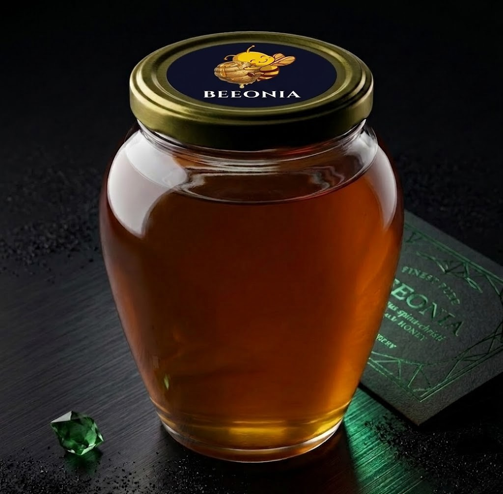
Polifloralı Çiçek Balı
Selendi, Manisa
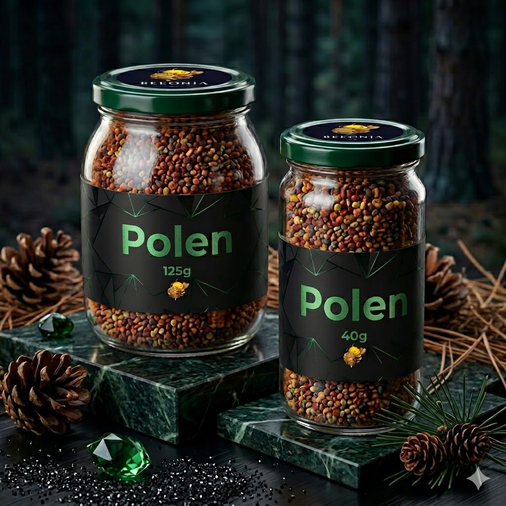
Polen
Doğal Arı Poleni
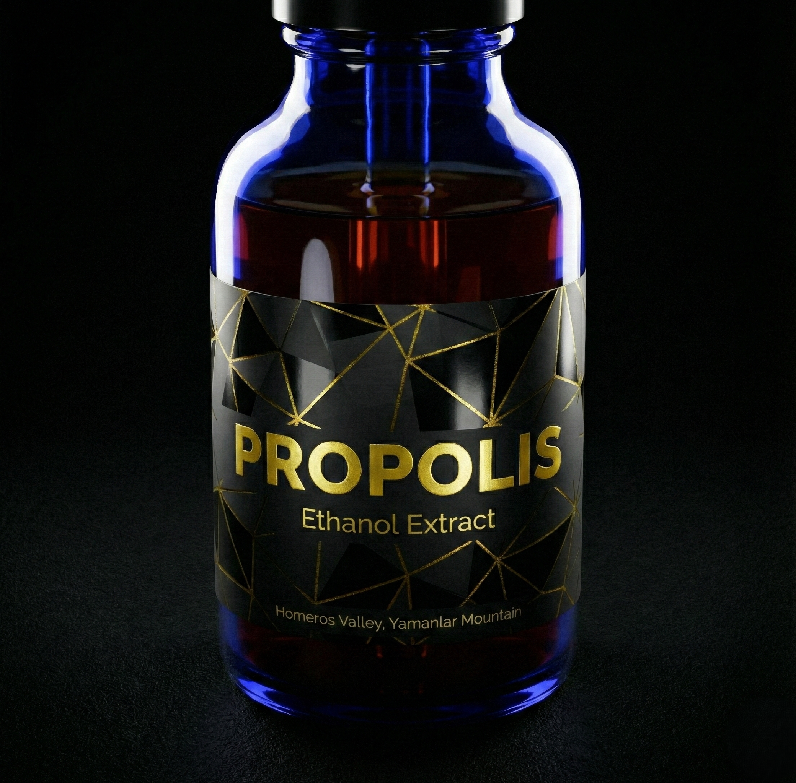
Propolis
Bağışıklık Kalkanı

Hayıt Balı
Aromatik Ege Balı

Çam Balı
Homeros Vadisi, İzmir

PRJ-M2
Bağışıklık Destekleyici

AP-IV
Zindelik Karışımı
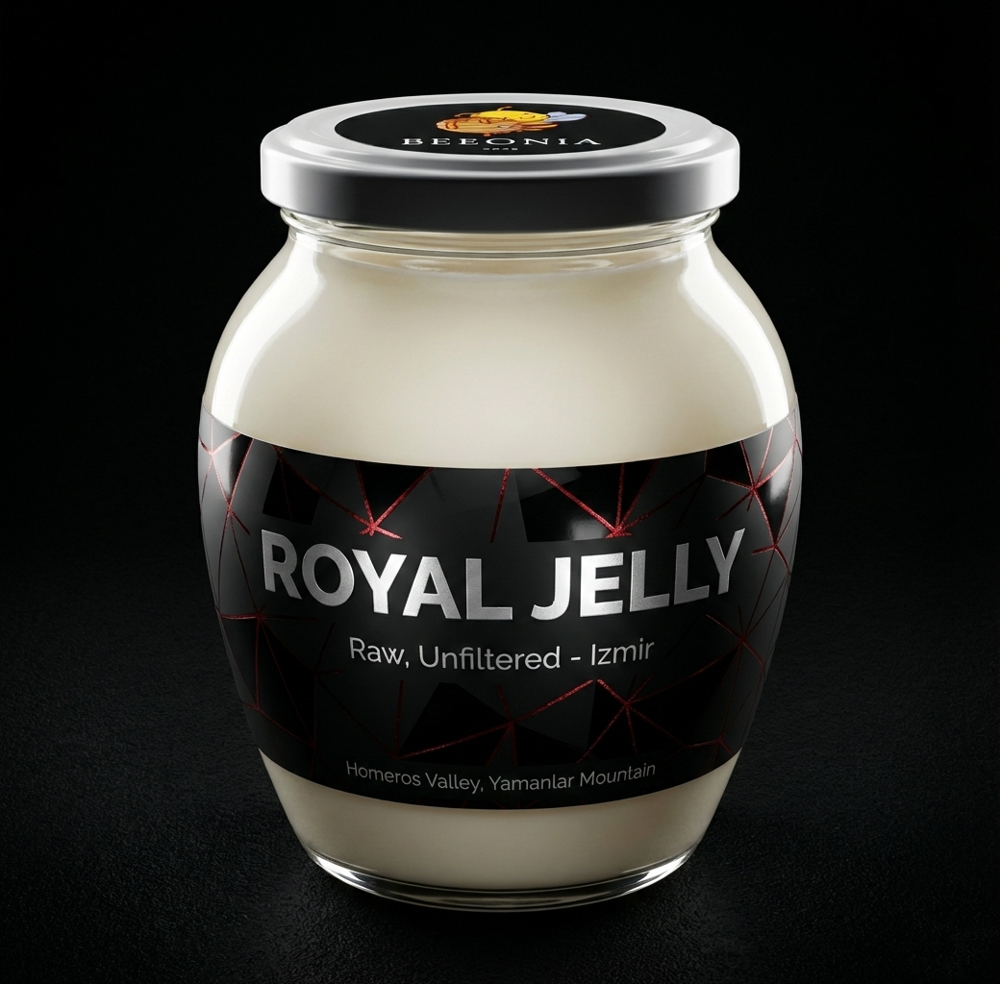
Arı Sütü
Doğal Canlılık Kaynağı
LITERATURE
Scientific articles that may be useful for a better understanding of our products' health impact and longevity.
GALLERY

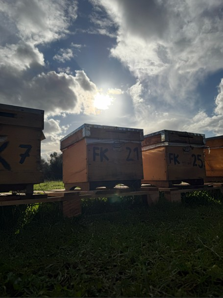
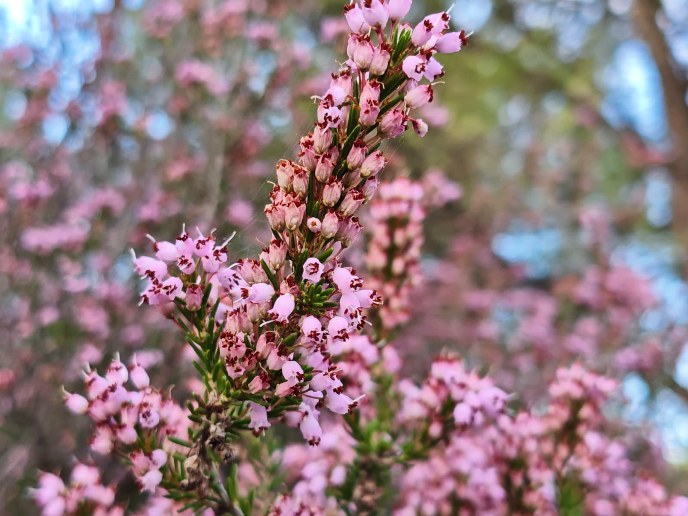
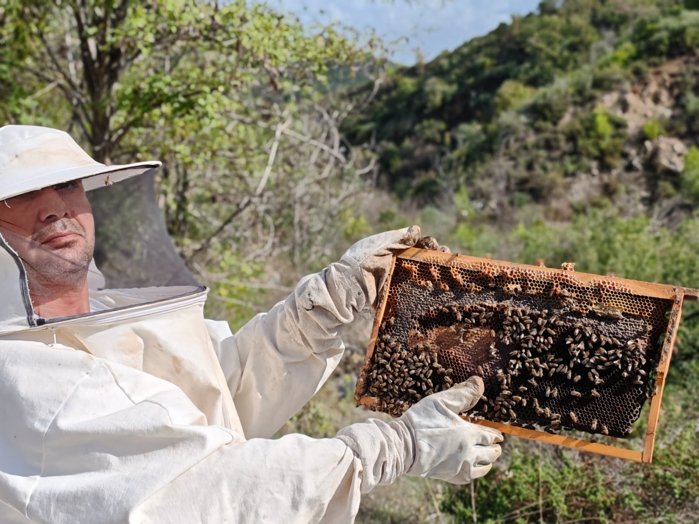


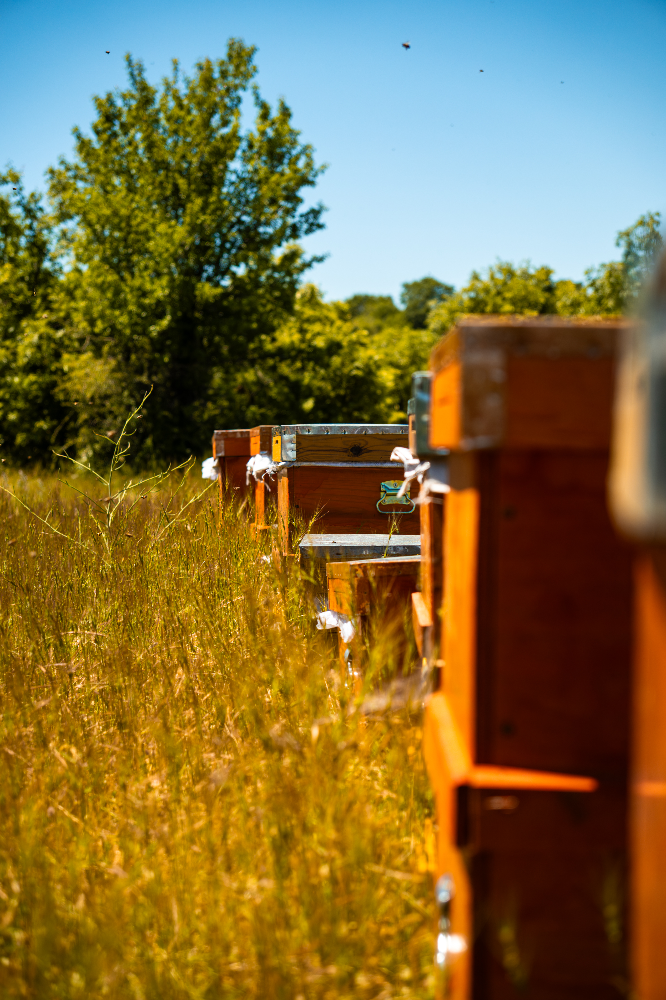
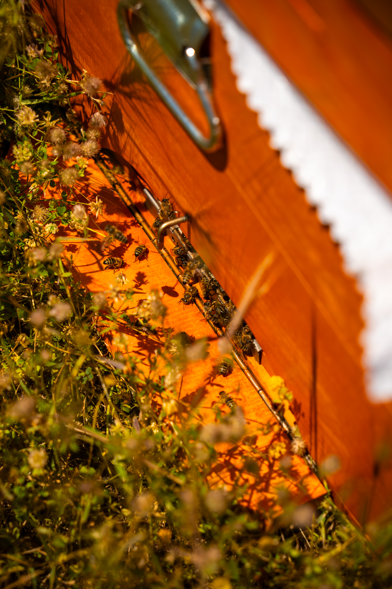
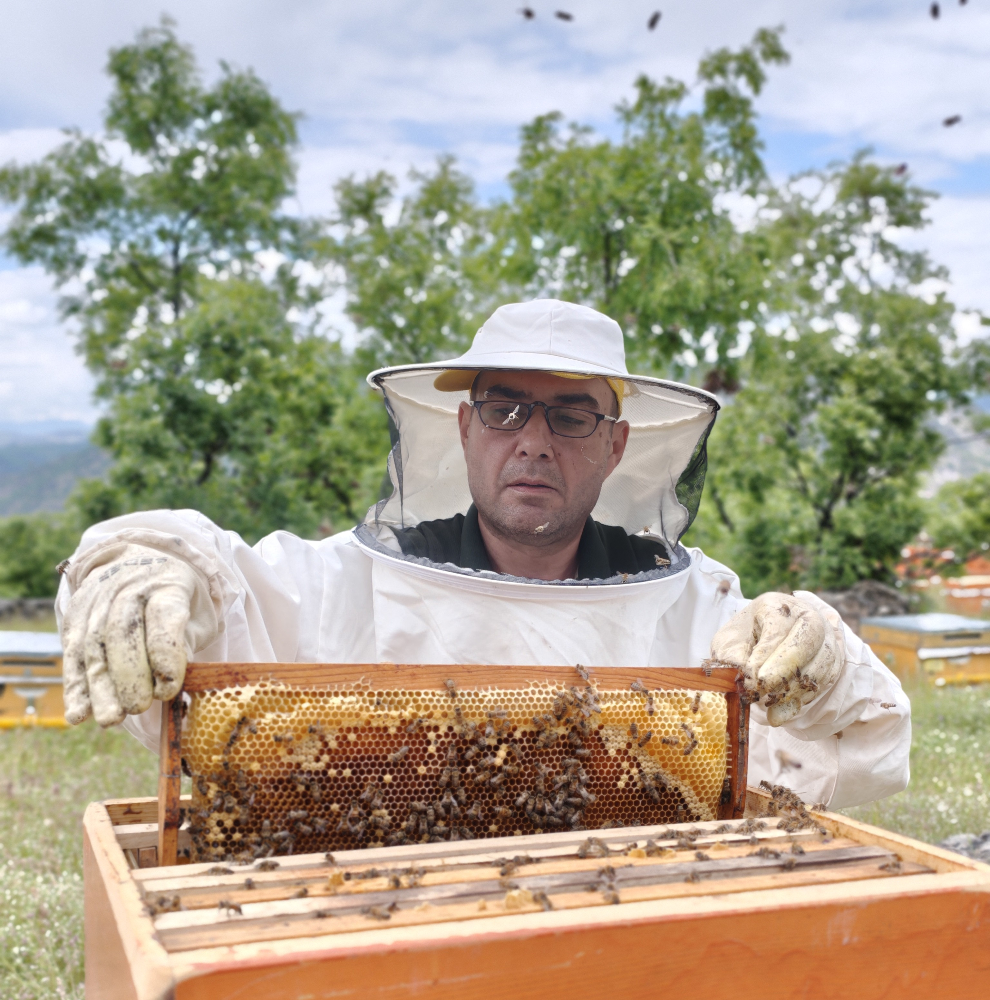
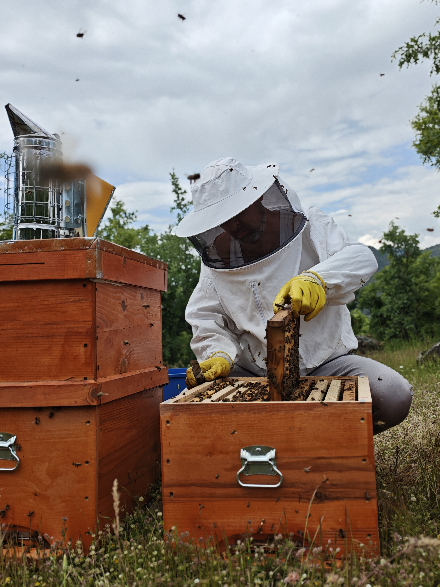
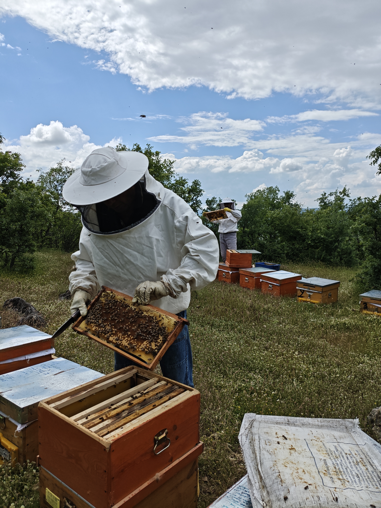
ABOUT
OUR VISION
Protecting the long-term health of bees and people through science-based, sustainable beekeeping.
Science-Driven Production
Building beekeeping on scientific knowledge, rigorous analysis, and full traceability to ensure consistently high-quality, low-residue honey.
Migratory Beekeeping
Seasonal migration across diverse flora zones — from Yamanlar Mountain's wildflowers to Menderes' heather and Balıkesir's blackthorn — for exceptional honey varieties.
Biodiversity & Sustainability
Contributing to environmental preservation and setting the standard for reliable, science-based production models in the industry.
OUR MISSION
Offering reliable bee products through scientifically based, traceable processes that prioritize nature.
Scientific Integrity
Every step grounded in hygiene standards, laboratory analysis, and current scientific data for full reliability.
Minimal Intervention
Colonies positioned by flora and climate conditions, with low chemical load and a non-interventionist approach.
Knowledge Sharing
Openly sharing insights with consumers and beekeepers to foster a more conscious honey culture.
OUR PRINCIPLES
Transparency
Openly sharing product origins, harvest periods, and methods — free from misleading or exaggerated claims.
Traceability
Complete documentation of every production step, from field selection to final product.
Scientific Approach
Continuously improving through current literature, field observations, and data-driven decisions.
Bee Welfare
Prioritizing the health and natural behavior of our bees in every production decision.
Environmental Care
Selecting pristine locations with minimal pollution, targeting near-zero microplastic and pesticide exposure.
WHO WE ARE

HÜSEYİN KOCAKUŞAK
Molecular Biology & Genetics Master's Degree

OSMAN FALAKALI
Retired Banker

MEHMET KOCAKUŞAK
Retired Banker
MÜŞTERİ YORUMLARI
Organik ve doğal ürün severlere şiddetle tavsiye ediyorum. Harika bir deneyim!
SIK SORULAN SORULAR
BEEONIA olarak bizim için en yüksek kalite rastgele bir iddia değil, her zaman laboratuvarda kanıtlanabilir bilim standartlarına ulaşma hedefidir. Üretim felsefemizin merkezine bilimsel verilerin doğruluğunu koyuyoruz.
İlerleyen süreçte paylaşacağımız laboratuvar analizlerimizin en üst düzeyde ve kusursuz parametrelerle çıkmasını garantilemek için arıcılık yöntemlerimizi bugünden tamamen bilim temelli bir refah modeli üzerine kuruyoruz.
🛡️ Kovan Müdahalelerinde Önceliğimiz Arı Refahı
Ticari kaygılarla bal miktarını maksimize etmeye çalışmak yerine koloni sağlığını koruyoruz. Çünkü öngörümüz, en nitelikli ve saf balın ancak stresten uzak yaşayan sağlıklı bir koloniden elde edilebileceği yönündedir.
📍 Doğru Konum ve Gezginci Arıcılık
Ballarımızın biyokimyasal imzasını en nitelikli seviyeye taşımak amacıyla arılarımızı sadece doğru florayla buluşturmakla kalmıyor, kovanlarımızı doğrudan zengin nektar kaynaklarının merkezine konumlandırıyoruz. Bu sayede arılarımızın uçuş mesafelerini mümkün olan en kısa mesafeye indirerek ciddi bir enerji tasarrufu sağlamalarını (energy budgeting) destekliyor (PMID: 40331619), yorulmalarının ve yıpranmalarının önüne geçiyoruz.
🗺️ Topografik Konumlandırma Avantajı ve Sağlıklı Yaşam Süresi
Arılarımızın sadece kronolojik yaşam sürelerini değil, bu süreyi ne kadar kaliteli ve zinde geçirdiklerini, yani sağlıklı yaşam sürelerini (healthspan) önemsiyoruz. Bunu; verimli kaynaklara yakınlığın yanı sıra arazinin eğimini hesaplayarak ağır nektar yüküyle kovana dönen işçi arıların yer çekiminden destek alarak yokuş aşağı süzülmelerini sağlayan topografik konumlandırma avantajı gibi detaylar ile destekliyoruz.
🌾 Beslenme
Arılarımızın gelişim döneminde ihtiyaç duydukları temel protein kaynağı olan poleni, kar amacı güderek asla kısıtlamıyor ve kovan içinde yeterlinin çok daha üzerinde bir miktarda onlara bırakıyoruz (PMID: 36994419). Böylece hem yaşam sürelerini en sağlıklı temel üzerine inşa ediyor hem de hastalıklara dirençli, güçlü bir healthspan sunuyoruz (PMID: 36354809). Beslenme kendi hayatımızda da en değer verdiğimiz parametreler arasında yer alıyor. Aynı özeni arılarımıza da gösteriyoruz.
🌡️ Sürdürülebilir Kovan Mikroiklimi ve Isı Dengesi
Özellikle sıcak ve kurak yaz günlerinde arıların dehidrasyon stresi yaşamasını engellemek için apiyar yakınında kesintisiz temiz su kaynakları bulunduruyoruz (PMID: 38227669). Arıların enerjilerini kovanı soğutmak için harcayıp bitap düşmelerini önleyecek konumlandırma stratejileriyle, koloninin enerjisini ve metabolik verimliliğini koruyoruz (PMID: 37848056).
🧼 Ekspozomal Faktörleri Minimumda Tutuyoruz
Arılarımızı çevresel stres faktörlerinden, kirlilikten ve baskıdan korumayı günlük hayatımızda kendimiz için de aldığımız bir karar ve yaşam felsefesi olarak görüyoruz. Onların doğal sağlığını her şeyin önünde tutarak, bu etkilerden uzak kalabilecekleri en izole apiyarları seçiyoruz.
Biz arılarımızın sağlığına ve bilimin rehberliğine inanarak üretiyoruz. Yakında tüm analiz raporlarımızla bu saf kaliteyi şeffaf bir şekilde sizinle paylaşmak için heyecanlıyız.
Tek bir parametreye (örneğin nem veya HMF değeri) dayalı kalite değerlendirmesi yanıltıcı olabilir. Kapsamlı bir analiz; prolin içeriği (olgunluk göstergesi, >180 mg/kg), diastaz aktivitesi (enzim bütünlüğü, >8 Schade), elektriksel iletkenlik (mineral profili) ve toplam fenolik madde içeriğini birlikte değerlendirmelidir.
Bunların ötesinde, biz arı ve insan sağlığını koruyan bir üretim anlayışı benimsiyoruz: akarisit, pestisit ve mikroplastik kalıntısı içermeyen bal üretimi. Çünkü gerçek kalite, yalnızca balın kimyasal kompozisyonunda değil, üretim sürecinin bütünlüğünde yatar.
Isıl işlem, balın enzimatik yapısını doğrudan etkiler. Diastaz aktivitesi 49°C üzerindeki sıcaklıklarda belirgin şekilde azalmaya başlar; 65°C'de 5 saat maruziyetle yaklaşık %60 kayıp yaşanır. İnvertaz enzimi ısıya daha duyarlıdır: 75°C'de 24 saatlik ısıtmayla aktivite %85-95 oranında düşer.
Aynı zamanda sıcaklık artışı, potansiyel genotoksik etkisi bildirilen HMF (hidroksimetilfurfural) oluşumunu hızlandırır. Balın biyoaktif bileşenlerinden faydalanmak için 40°C altındaki içeceklere eklenmesi veya ayrı tüketilmesi önerilir.
Kristallenme, balın doğal bir fiziksel sürecidir ve kalite bozulması göstergesi değildir. Aksine, işlenmemiş, ısıl müdahale görmemiş balın karakteristik özelliğidir. Kristallenme eğilimini belirleyen birden fazla parametre vardır; bunların başında fruktoz/glukoz (F/G) oranı gelir: F/G <1.11 olan ballar hızlı kristallenir (haftalar içinde), F/G >1.33 olan ballar aylarca hatta yıllarca sıvı kalabilir.
| Bal Türü | F/G Oranı | Kristallenme Süresi |
|---|---|---|
| Karaçalı | 1.05-1.20 | 4-8 hafta |
| Hayıt (Vitex) | 1.15-1.28 | 3-6 ay |
| Kestane | 1.35-1.55 | 12-24 ay |
| Akasya | 1.45-1.70 | 18+ ay |
| Çam Balı | 1.50-2.10 | Yıllar / pratikte kristallenmez |
Çiçek Balı ile Çam Balı Neden Farklı Davranır?
Çiçek balları, bitkilerden toplanan nektardan üretilir; şeker yapıları ağırlıklı olarak glukoz ve fruktozdan oluşur. Bu nedenle kristallenme eğilimi büyük ölçüde F/G oranına bağlıdır. Çam balı ise tamamen farklı bir kaynaktan gelir: Basidiomycete mantarı Marchalina hellenica'nın çam ağaçlarından sağladığı bal özü (honeydew) salgısından elde edilir. Bu salgı; melezitoz (%5-30) ve erloze gibi yüksek moleküllü trisakkaritin yanı sıra yüksek mineral ve enzim konsantrasyonu içerir. Bu oligosakkaritler, glukozun kristal kafesi oluşturmasını fiziksel olarak engeller. Sonuç olarak çam balı, F/G oranı 1.50-2.10 gibi son derece yüksek değerlere ulaşır ve normal depolama koşullarında neredeyse hiç kristallenmez. Bu, kalitesizliğin değil; yapısının bir yansımasıdır.
F/G Oranı Dışındaki Kristallenme Parametreleri
Glukoz/su (G/W) oranı ikinci kritik parametredir: G/W >2.0 olduğunda kristallenme hızlı ve tam gerçekleşir; G/W <1.7 olduğunda glukoz doygunluğa ulaşamadığı için kristallenme yavaşlar veya durur. Sıcaklık da belirleyici bir rol üstlenir: 10-14°C, kristal çekirdeği oluşumunu (nucleation) hızlandıran optimal aralıktır; 25°C üzerinde glukozun suda çözünürlüğü artar ve kristallenme inhibe olur. Ayrıca filtrelenmemiş doğal ballar bünyelerinde taşıdıkları ince polen tanelerini, balmumu partikülleri ve hava kabarcıklarını çekirdeklenme (nucleation) merkezi olarak kullanır; bu nedenle sanayi filtrasyonuna tabi tutulmamış ballar tipik olarak daha hızlı kristallenir. Son olarak, yüksek moleküllü oligosakkaritler (özellikle çam balındaki melezitoz) glukoz moleküllerinin düzenli kristal kafes kurmasını sterik olarak engeller ve bu ballar pratikte kristallenmez. Kristallenmiş balı 40°C altında su banyosunda ısıtarak akışkan hale getirebilirsiniz.
Varroa destructor, günümüzde koloni kayıplarının en önemli biyotik faktörlerinden biridir. Ancak mücadelede kullanılan sentetik akarisitlerin (amitraz, coumaphos, tau-fluvalinate) hem arı sağlığı hem de bal kalitesi üzerinde belgelenmiş olumsuz etkileri bulunmaktadır.
Balmumunda Birikim ve Bala Geçiş
Sentetik akarisitler lipofilik yapıları nedeniyle balmumunda birikim gösterir. Coumaphos'un balmumundaki yarı ömrü 115-346 gün arasında değişir ve eritme işlemiyle bile tam olarak uzaklaştırılamaz. Bu kalıntılar balmumundan bala ve kuluçka hücrelerine difüzyonla geçebilir.
Erkek Arı Üreme Fizyolojisi Üzerindeki Etkiler
Gelişim döneminde akarisitlere maruz kalan erkek arılarda sperm canlılığı önemli ölçüde azalır. Coumaphos ve fluvalinate kontaminasyonlu balmumunda yetiştirilen dronelarda sperm canlılığı kontrol grubuna kıyasla düşük bulunmuştur.
Kraliçe Sağlığı ve Koloni Geleceği
Coumaphos'un subletal dozları (100 ppm), spermatheca'da depolanan spermin canlılığını %33 oranında azaltma eğilimi göstermiştir. Akarisitlere maruz kalan kraliçelerde detoksifikasyon, bağışıklık ve gelişim ile ilişkili genlerin ekspresyonunda down-regülasyon saptanmıştır.
Mücadele yöntemlerimiz hakkında detaylı bilgi için bizimle iletişime geçebilirsiniz.